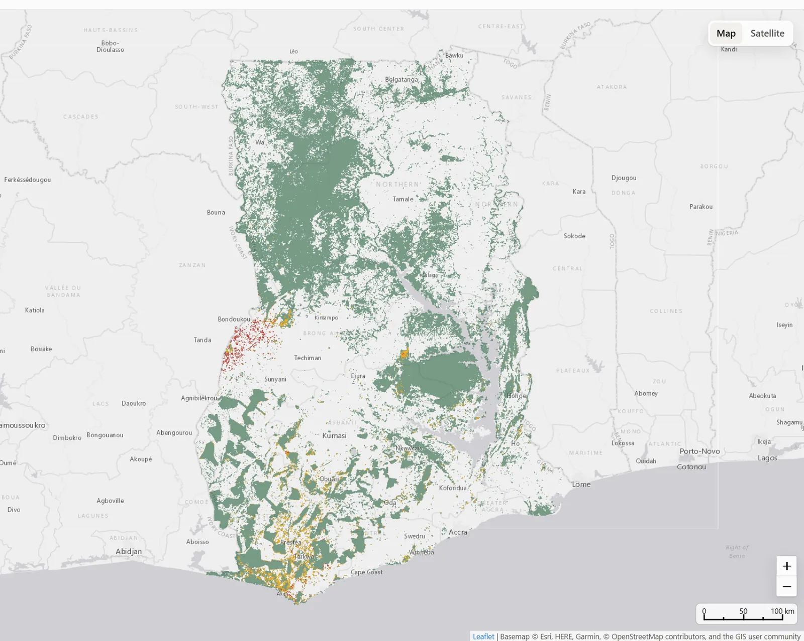

Ghana EUDR tree-crop map
Under the EU Deforestation Regulation, cocoa, rubber and oil palm can only enter the EU if they were not grown on land deforested after 2020. The tool flags tree crops on land the EU's 2020 forest baseline (JRC GFC2020) counts as forest, split by model confidence to prioritize field checks.
- Digitized 318 reference polygons across 23 land-cover classes from high-resolution imagery.
- Classified about 2.46 billion pixels at 10 m with TabPFN-3.5 on Google satellite embeddings.
- 83% accuracy on held-out polygons. Where the model was confident, it was right 90% of the time.